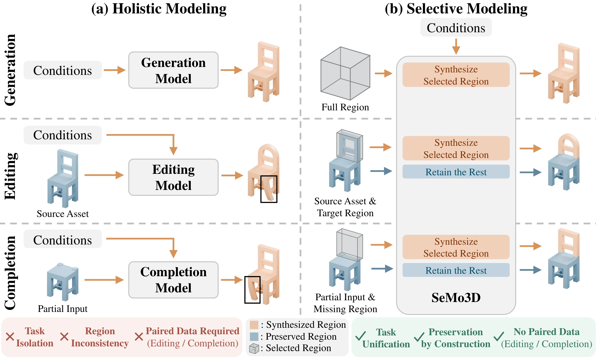
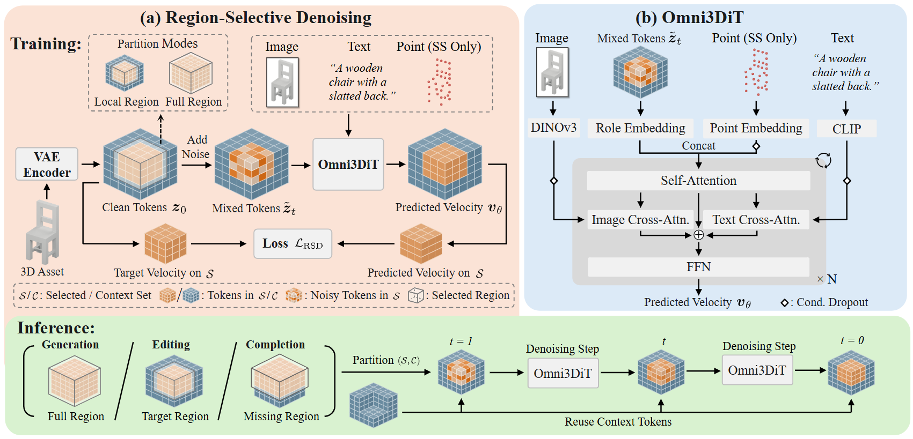

Abstract
3D generation, editing, and completion are typically treated as regenerating the complete 3D asset under task-specific constraints, even when only a local region needs modification. This leads to task isolation, inconsistency in content that should remain unchanged, and dependence on task-specific paired data. We address these issues with a key observation: the three tasks all synthesize a designated region while keeping the rest intact—the full region for generation, the target region for editing, and the missing region for completion. We term this paradigm Selective Modeling and build SeMo3D upon it; it naturally unifies the three tasks, preserves unchanged content by construction, and enables training without paired editing or completion data, since any 3D asset can be partitioned into a selected region and its context. For training, we propose region-selective denoising, which randomly selects regions of varying sizes on standard 3D assets and applies noise and loss only to them, jointly learning all three tasks. For architecture, we propose Omni3DiT, a multi-condition 3D diffusion transformer that distinguishes regions to create from those to retain and fuses image, text, and point guidance for fine-grained control. Experiments across three benchmarks show SeMo3D surpasses state-of-the-art methods on all tasks, delivering multimodal controllability in generation and strong consistency and accuracy in editing and completion. SeMo3D further serves as a unified modeling tool for agents, enabling efficient 3D creation through natural-language interaction.
Key Insight

Existing methods follow (a) Holistic Modeling: they regenerate the complete asset even when only a local region should change. Yet generation, editing, and completion share one structure — they synthesize a designated region while keeping the rest intact, and differ only in which region is selected: the full region, the target region, or the missing region. (b) Selective Modeling models exactly this — it synthesizes only the selected region and reuses everything else.
Task Unification
Instead of a separate model per task, one model and one training procedure cover all three — only the selected region changes.
Preservation by Construction
Context tokens remain exactly unchanged throughout synthesis.
No Paired Data
Any ordinary 3D asset splits into a selected region and its context, so editing and completion need no source–target pairs.
Explore Selective Modeling
Full region selected.
Selective Modeling synthesizes only the selected region and reuses everything else. This paradigm naturally unifies all three tasks: generation selects the entire object, editing selects a target region, and completion selects a missing region.
Method

SeMo3D instantiates selective modeling with two components. Region-Selective Denoising (a) adds noise and loss only to a selected token set 𝒮 while the context 𝒞 stays clean; at inference, 𝒮 is denoised from pure noise and the clean 𝒞 is reused at every step. Omni3DiT (b) is a multi-condition 3D diffusion transformer that processes both kinds of tokens together and fuses image guidance with optional text and point conditions.
Region-Selective Denoising
Randomly selects regions of varying sizes on standard 3D assets. As the selected region grows from a small box to the full asset, one procedure spans local editing, partial completion, and full generation — no paired supervision needed.
Omni3DiT
Role embeddings tell noisy selected tokens from clean context; parallel image and text cross-attention plus sparse point tokens in self-attention give fine-grained, complementary control.
Agentic 3D Modeling
3D Modeling Workflows Drag to Rotate · Ctrl + Scroll to Zoom
SeMo3D serves as a unified modeling tool for agents, enabling efficient 3D creation through natural-language interaction.
Comparison
Comparison with State-of-the-Art Methods
Interactive 3D Results Drag to Rotate · Ctrl + Scroll to Zoom · Download GLB / PLY
Comparison with State-of-the-Art Methods
Interactive 3D Results Source and Result Rotate in Sync · Download GLB
Comparison with State-of-the-Art Methods
† With additional sparse point guidance.
Interactive 3D Results Toggle Point Hints and Partial Input · Download GLB / PLY
Interactive 3D Results All Four Results Rotate in Sync · Download GLB / PLY
Citation
The arXiv identifier and URL will be added when available.
@misc{sun2026semo3d,
title = {SeMo3D: Unifying 3D Generation, Editing, and Completion via Selective Modeling},
author = {Sun, Xiaokun and Yang, Jian and Zhang, Zhenyu},
year = {2026},
note = {arXiv identifier and URL to be added}
}